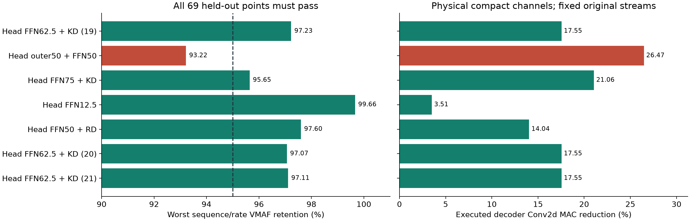
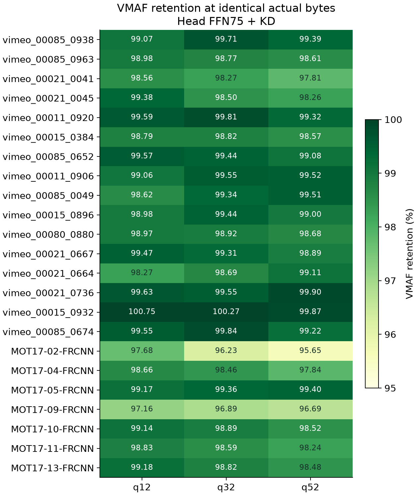
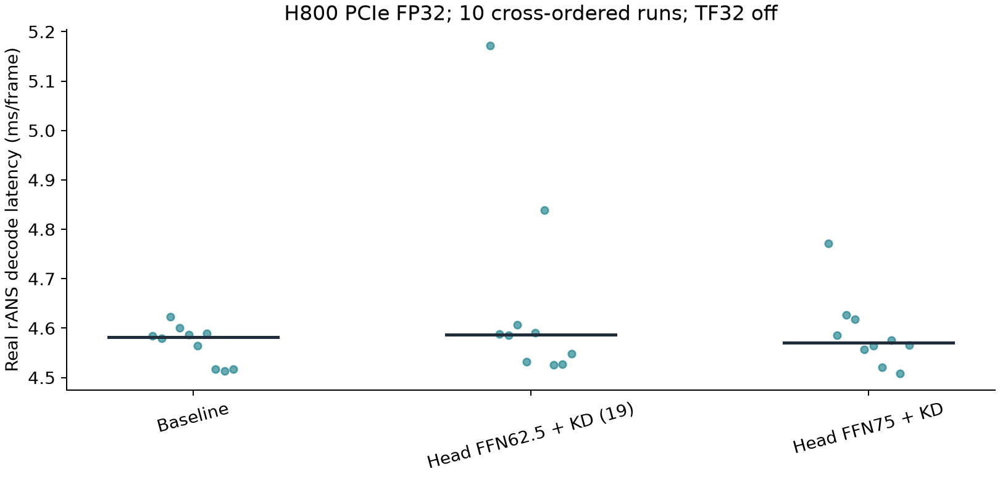
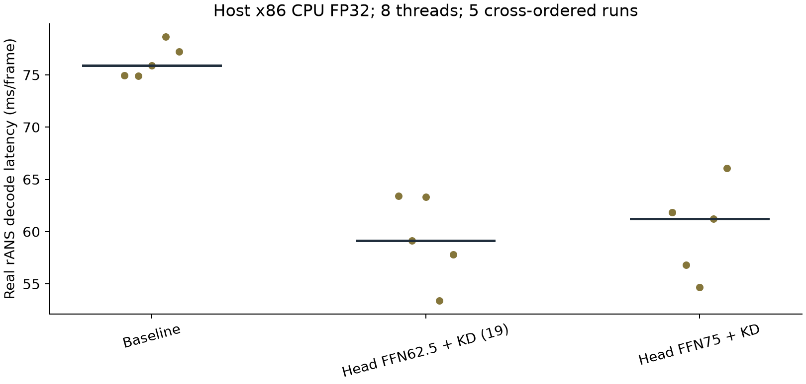

验收：每个保留视频、每个码率点，候选 VMAF 分数 ≥ 基线的95%；实际码流字节完全相同，码率容差为0。
测试：16段 Vimeo 官方测试片段，加7个完整 MOT17 视频，共5428帧、3个码率点、69个逐视频验收点。输入最大640×360，保持MOT17比例；Vimeo片段为原生448×256。H800、PyTorch2.8.0+cu128、CUDA12.8、FP32、关闭TF32。该结果不等同于所有分辨率、所有码率或ARM性能保证。
| 模型 | 角色 | 最差VMAF保留 | 解码卷积MAC减少 | 相同码流 | 验收 |
|---|---|---|---|---|---|
| head_ffn_taylor_p625_kd_seed20261019 | primary_with_validation_margin | 97.228% | 17.551% | True | passed |
| head_outer50_ffn50_kd_seed20261019 | aggressive_comparison | 93.217% | 26.473% | True | not_passed |
| head_ffn_taylor_p750_kd_seed20261019 | uniform_ffn_comparison | 95.648% | 21.061% | True | passed |
| reconstruction_taylor_p125 | conservative_reference | 99.663% | 3.510% | True | passed |
| reconstruction_taylor_p500_rd_finetune_seed20261019 | uniform_ffn_finetuning_reference | 97.601% | 14.041% | True | passed |
| head_ffn_taylor_p625_kd_seed20261020 | primary_training_seed_replica | 97.067% | 17.551% | True | passed |
| head_ffn_taylor_p625_kd_seed20261021 | primary_training_seed_replica | 97.112% | 17.551% | True | passed |
逐视频实际码率/VMAF · 全部方法配置比较 · 检查点、真实码流及路径映射 · 真实解码计时
解码器读取同一实际rANS文件；独立进程不读取原始RGB输入或编码器状态。重建头模型的所有非重建头权重须与基线摘要一致；drift系列固定原编码器、量化器、熵表和潜变量几何，使用GOT10k的16段训练视频和4段选型视频恢复自身递归误差，实际码流解码必须等价于固定潜变量解码。不宣称剪枝编码器可以生成相同码流。码率包含研究容器头、帧长度和rANS载荷，不含预装模型权重。
python prepare_source.py # 依照 bootstrap.sh 安装固定环境和 msrtc-rans python decode_stream.py --stream streams/STREAM_SHA256.mlvcp --checkpoint models/MODEL.pt --structured --entropy-tables entropy/encoder-tables.npz --output decoded.yuv
传统FFN检查点去掉 --structured。原生CPU和CUDA生成的量化熵表不同；必须保留随包实际编码器整数表和JSON哈希。旧CPU结果已隔离，只交付冻结表后重跑的CPU计时；完整69点VMAF仅在H800确认。原始训练特征缓存不打包；可按固定数据和对应脚本重新生成。训练状态保存在 training/，可供按配方恢复；当前CLI默认从预训练权重重跑。
主要依据：固定 MLVC 源码 · VMAF3.0.0 · AutoDL公共数据目录。性能、失败结果和方法覆盖以本包CSV/JSON实测为准。



